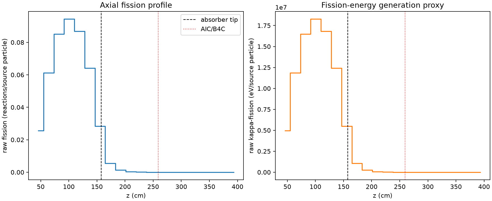
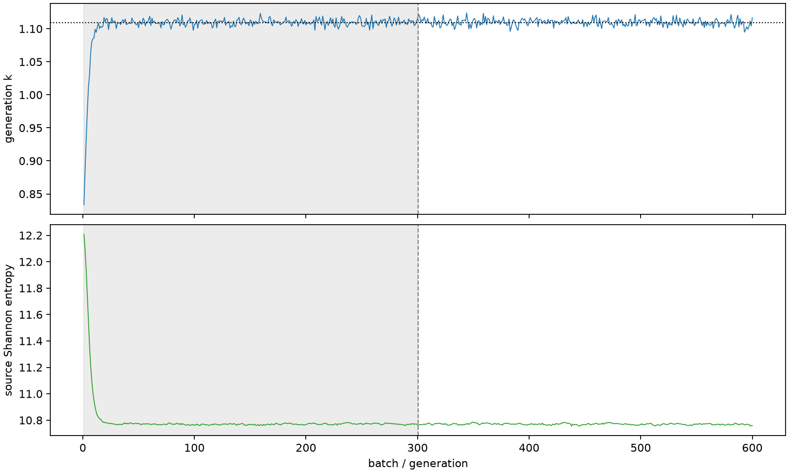

| field | value |
|---|---|
| experiment | V2-STAGE_256_OGRENCI_03-0030 |
| k | 1.109592727782413 |
| MC standard error | 0.00018505079420913484 |
| seconds | 968.3594679170055 |
| acceptance | not_assessed |
| convergence | review_required |
Completed is output integrity only; physical and statistical review required. Zero tallies do not prove zero production or zero uncertainty.
| diagnostic | value |
|---|---|
| geometric fuel voxels | 5280 |
| zero fission tally voxels | 1290 |
| low signal fuel voxels | 2392 |
| low signal fission share | 6.322682847662737e-05 |
| low signal kappa share | 6.325642207370557e-05 |
| important fission share | 0.9500955050679074 |
| previous filter included | 2888 |
| duration estimate s | 1562.5173488400023 |
| actual minus estimate s | -594.1578809229968 |
| fission relative MC error | statistics |
|---|---|
| all_geometric_fuel | {"voxels": 5280, "positive_mean_voxels": 3990, "zero_mean_voxels": 1290, "undefined_relative_error_voxels": 1290, "median": 0.020143197628105278, "p95": 0.9999999999999999, "maximum": 1.0000000000000002} |
| low_signal | {"voxels": 2392, "positive_mean_voxels": 1102, "zero_mean_voxels": 1290, "undefined_relative_error_voxels": 1290, "median": 0.6754370823418051, "p95": 1.0, "maximum": 1.0000000000000002} |
| important_95pct | {"voxels": 1687, "positive_mean_voxels": 1687, "zero_mean_voxels": 0, "undefined_relative_error_voxels": 0, "median": 0.0059009571318193905, "p95": 0.009609591890232753, "maximum": 0.011095033777629017} |
| outside_previous_filter | {"voxels": 2392, "positive_mean_voxels": 1102, "zero_mean_voxels": 1290, "undefined_relative_error_voxels": 1290, "median": 0.6754370823418051, "p95": 1.0, "maximum": 1.0000000000000002} |
| kappa_fission relative MC error | statistics |
|---|---|
| all_geometric_fuel | {"voxels": 5280, "positive_mean_voxels": 3990, "zero_mean_voxels": 1290, "undefined_relative_error_voxels": 1290, "median": 0.02011347806808684, "p95": 0.9999999999999999, "maximum": 1.0000000000000002} |
| low_signal | {"voxels": 2392, "positive_mean_voxels": 1102, "zero_mean_voxels": 1290, "undefined_relative_error_voxels": 1290, "median": 0.6753959842288519, "p95": 1.0, "maximum": 1.0000000000000002} |
| important_95pct | {"voxels": 1687, "positive_mean_voxels": 1687, "zero_mean_voxels": 0, "undefined_relative_error_voxels": 0, "median": 0.005894441346350351, "p95": 0.009598315012154015, "maximum": 0.011081167571074175} |
| outside_previous_filter | {"voxels": 2392, "positive_mean_voxels": 1102, "zero_mean_voxels": 1290, "undefined_relative_error_voxels": 1290, "median": 0.6753959842288519, "p95": 1.0, "maximum": 1.0000000000000002} |
| axial bin | fission share | kappa-fission share |
|---|---|---|
| 1 | 0.05646932969698468 | 0.0564714168556699 |
| 2 | 0.13510428489383156 | 0.13510243123556626 |
| 3 | 0.18808058608045844 | 0.18807778435852596 |
| 4 | 0.20829256363494134 | 0.20828917014190904 |
| 5 | 0.19166379336379316 | 0.19166104019785296 |
| 6 | 0.14157226800185027 | 0.14157049296280338 |
| 7 | 0.06272449588515033 | 0.06272861845363718 |
| 8 | 0.01227668988316694 | 0.012281452800930601 |
| 9 | 0.00290157706154991 | 0.0029027793529047313 |
| 10 | 0.0006906694384098025 | 0.0006909687104842508 |
| 11 | 0.0001695249497619555 | 0.00016960248022075453 |
| 12 | 4.135317197461545e-05 | 4.137478393633183e-05 |
| 13 | 9.993260678628698e-06 | 9.996114246351927e-06 |
| 14 | 1.7918418912300355e-06 | 1.7923154327068999e-06 |
| 15 | 6.186480212645135e-07 | 6.191497517384264e-07 |
| 16 | 4.215341707318434e-07 | 4.214531176328817e-07 |
| 17 | 3.8653365127659634e-08 | 3.863301023443689e-08 |
| 18 | 0.0 | 0.0 |
| 19 | 0.0 | 0.0 |
| 20 | 0.0 | 0.0 |
Histories include the inactive-to-active transition at batch 300. kappa-fission approximates fission energy production, not total heat deposition.

